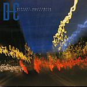

| Artist: | Dificil Equilibrio |
| Title: | Simetricanarquia |
| Label: | Musea FGBG 4471 |
| Length(s): | 45 minutes |
| Year(s) of release: | 2003 |
| Month of review: | [10/2003] |
| 1) | Vidas Son Horas | 5.47 |
| 2) | El Angel Exterminador | 7.10 |
| 3) | Penumbra (incluye: Movimiento Casual) | 1.57 |
| 4) | Dynamite | 2.54 |
| 5) | Al Destino Devenir | 5.05 |
| 6) | Ruptura3 | 2.46 |
| 7) | Jaqueline | 2.20 |
| 8) | Zakarit Mena Al Maghreb | 1.55 |
| 9) | Trayecto V | 3.15 |
| 10) | Bypass | 4.24 |
| 11) | Simetricanarquia | 7.08 |